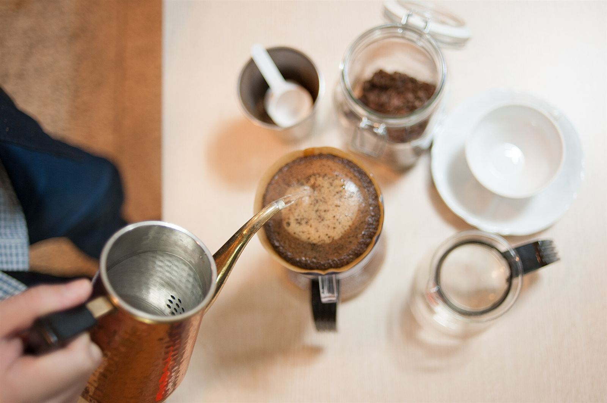
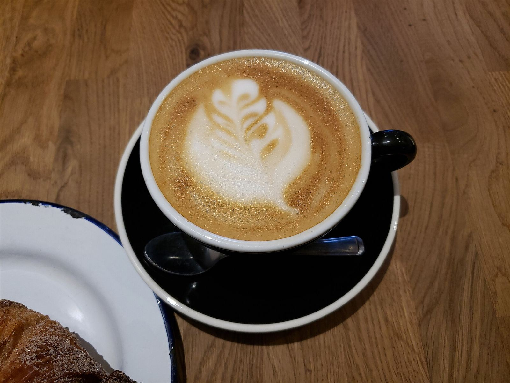
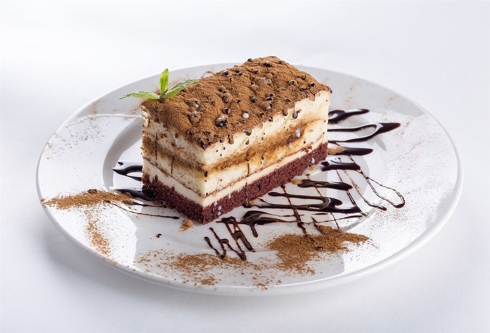
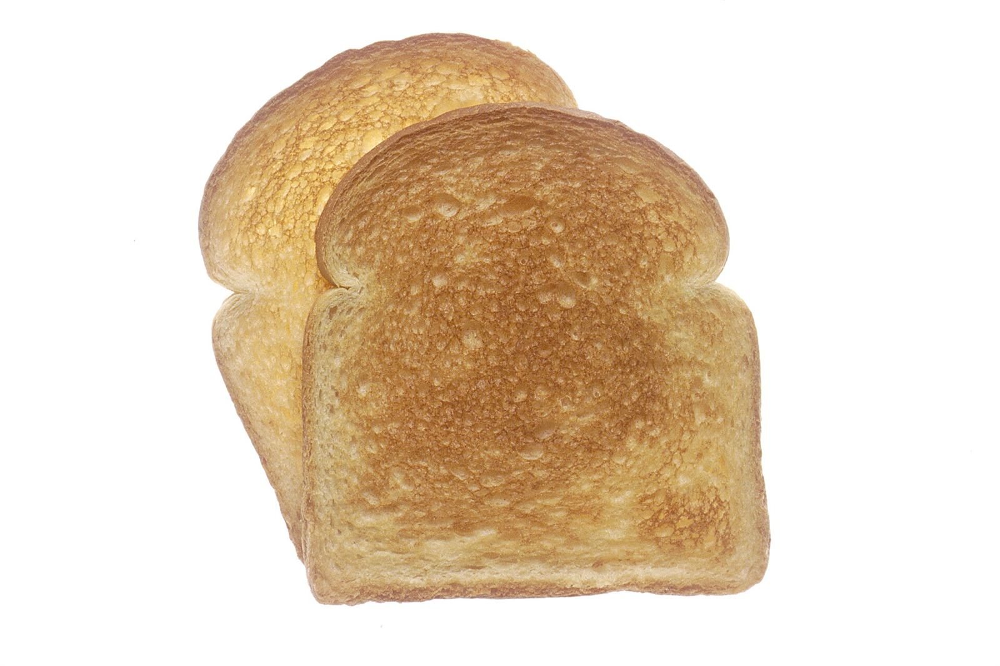

ドリンク
内容は準備中
イメージ写真
Caffe Ottoは、石川県加賀市大聖寺荒町にあるカフェです。お店の詳しいご紹介は、準備が整い次第こちらでお伝えします。
大聖寺は、かつて城下町として栄えた歴史をもつまちです。散歩の合間やお出かけの途中に、ひと息つく場所のひとつとして、お気軽にお立ち寄りください。※営業時間などはお問い合わせください。
営業時間: 準備中(お問い合わせください)

メニューの内容は準備中です。最新の情報はInstagramまたはお電話でご確認ください。

内容は準備中
イメージ写真

内容は準備中
イメージ写真

内容は準備中
イメージ写真
「散歩の途中にふらりと入って、静かな時間を過ごせました。ひとりでも居心地よく、また来たいと思いました。」
実際のお客様の声ではなく、イメージとして作成した例です。
大聖寺は、江戸時代に大聖寺藩の城下町として発展したまちです。現在も、古い町名や落ち着いた街並みを手がかりに、ゆっくり歩いて楽しむ方がいます。また、この地域は九谷焼ゆかりの土地としても知られています。まち歩きの合間のひと休みに、カフェを訪ねてみてはいかがでしょうか。
上記は地域についての一般的なご紹介です。

写真はイメージ素材です。実際の店内・メニュー・器とは異なる場合があります。
電話する